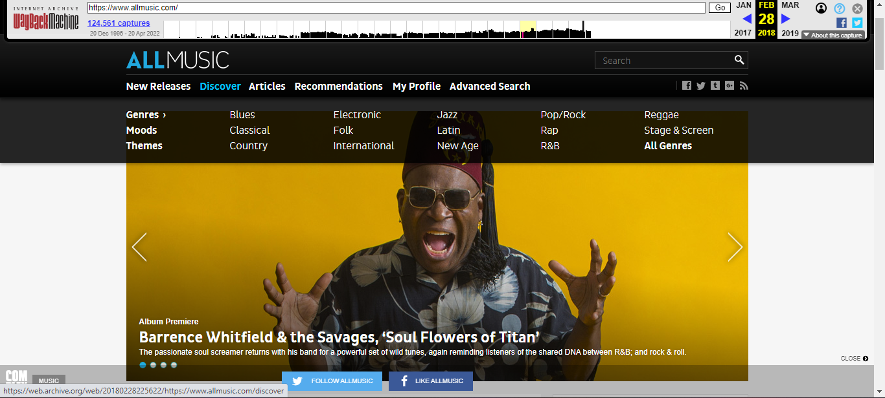
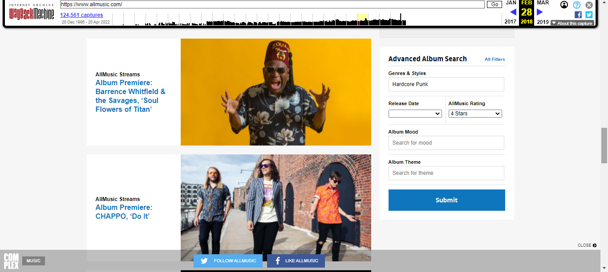
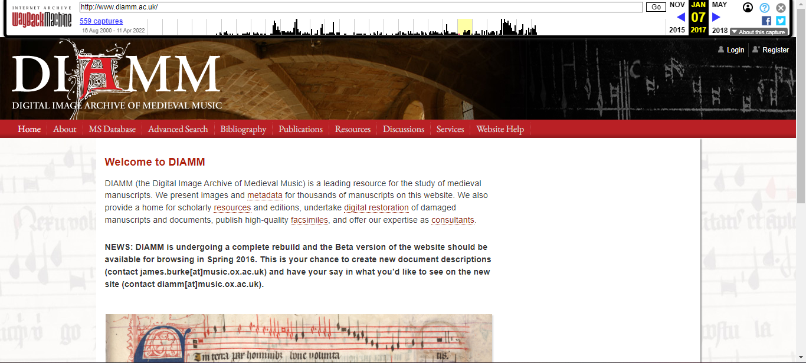
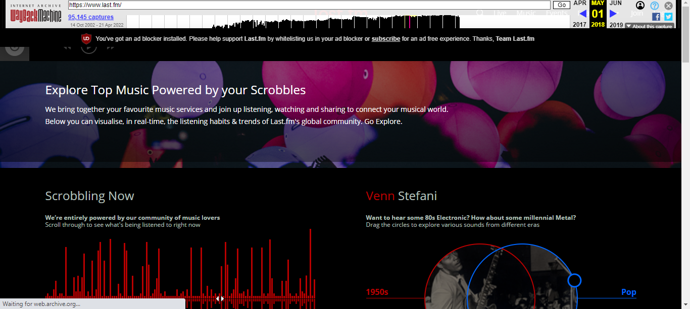
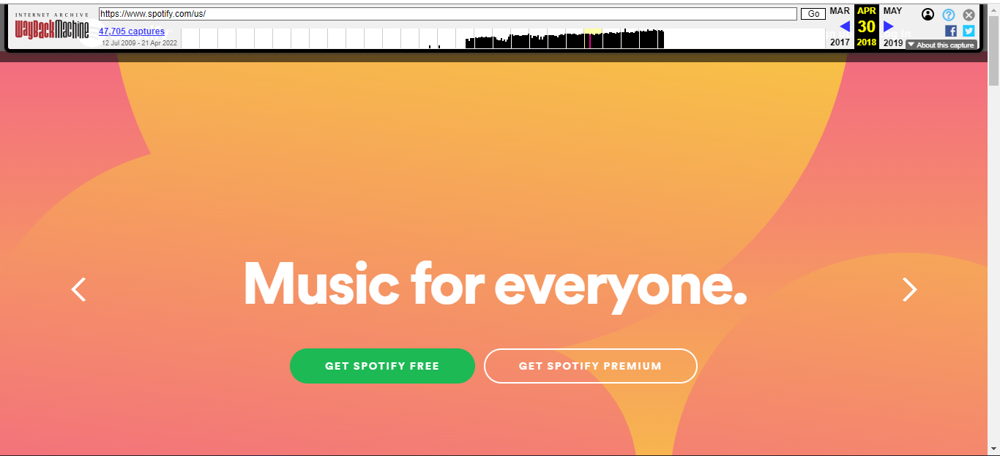

Web design elements present in 2012 continued in to 2018. Responsive website design has become even more important, with phones becoming bigger, and more and more users are utilizing a tablet just like they would a laptop. Speed and optimization of a website have also become crucial, with designers opting for fewer images, or even utilizing vector images to make their websites load faster. Navigation has become crucial to a good website, with mega menus and fat footers becoming the navigation trend.


AllMusic's 2018 website is a drastic change from their earlier websites. Adopting a more sleek, minimalistic design, AllMusic's 2018 design reduces the content clutter and focuses on the important areas of the website, such as expanding the search and adopting the mega menu. Utilizing a mega menu, AllMusic changed its navigation labels, and could now push the content that used to be on the main page into pages a user could peruse at their leisure.

This screenshot is taken from the beginning of 2017, not long before the website would undergo a design change that is still in place to this day. The 2017 version of the website is almost identical to the 2012 version, with a negative space design being adopted for the main page. the navigation labels remain the same, and there is a slight re-ordering of objects, with the explanation about DIAMM now on top of the image, but this could have also been done so that a user would see the bold text about the website undergoing maintenance first.

Last.fm's website underwent a massive overhaul between 2012 and 2018. While it continued to use red as one of its main colors, instead of utilizing a background of white and gray, a sleek black has been adopted. Instead of focusing on text and icons, Last.fm is now utilizing minimalistic images and focusing on advertising the uniqueness of scrobbles, which becomes an incentive for a user to join. Some elements of the website are still persisting, such as the scrobble counter, which has been featured on the website since it first launched.
See 2022 for MusicBrainz's website.

Spotify's 2018 website is perhaps the most modern of the five, adopting a calming color scheme instead of the website's usual neon green from the past. While the green is still present in the form of link colors, the redesign of the website is focused on negative space and minimalistic images that are meant to enhance, not distract. By 2018, Spotify had become a household name in the industry, and the website no longer had to focus on bringing in new users, and could simply advertise minimally, as if a user navigated to Spotify, it was most likely with the intent to join the website, as you could not casually browse without an account.